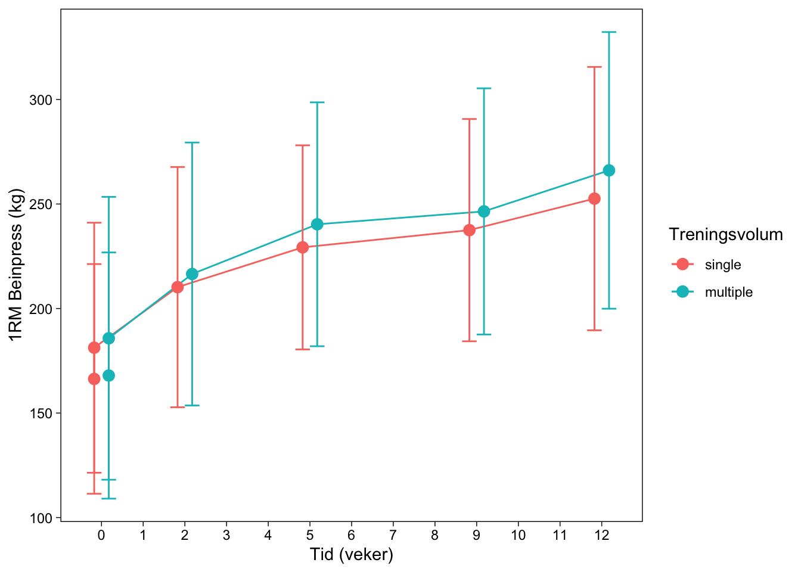
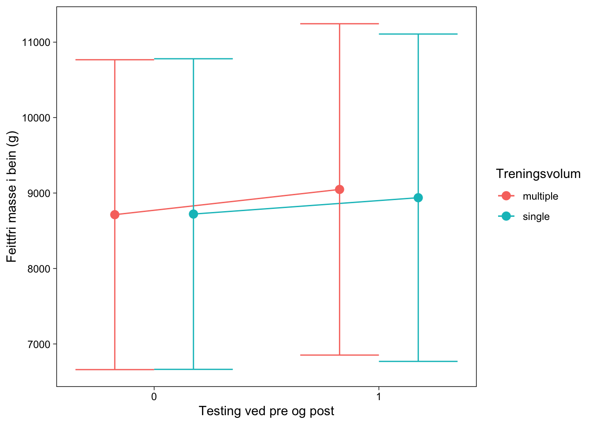

| time | Alder (år) |
Høgde (cm) |
Vekt (kg) |
|---|---|---|---|
| post | NA | 175.40 | 72.50 |
| pre | 22.91 | 174.96 | 70.57 |
5 Arbeidskrav 5: Repeterte målingar
5.1 Introduksjon
Det å kontrollere treningsvariablar blir sett på som ein av dei mest avgjerande faktorane for å maksimere muskelhypertrofi etter styrketrening (B. J. Schoenfeld et al. 2017; B. Schoenfeld and Grgic 2018; B. J. Schoenfeld, Ogborn, and Krieger 2016 & schoenfeld2016b). Variablar slik som treningsvolum, intensitet, restitusjon, val av øvingar og rekkjefølge på desse, kontraksjonshastighet og frekvens på treningsøkter spelar inn på kva treningseffekt ein sit igjen med etter økta (“Progression Models in Resistance Training for Healthy Adults” 2009). I tillegg spelar genetiske, epigenetiske og miljemessige faktorar inn på korleis treningsresponsen blir Morton et al. (2017). Sidan mangel på tid blir uttrykt som eit stort hinder for å gjennomføre eit treningsprogram (Choi et al. 2017), har fleire studiar undersøkt om kva minstekravet for treningsdoser for å få eit adekvat treningsstimuli.
I litteraturen ser ein alt i frå ein stor fordel med 3 sett per muskelgruppe i forhold til 1 sett (Stowers et al. 1983), til ingen forskjell mellom 3 og 1 sett (SCHLUMBERGER, STEC, and SCHMIDTBLEICHER 2001). Dette kan forklarast med fleire metodiske feil som har blitt gjort for å belyse dette temaet. Enkelte studiar har gjennomført berre ein pre-test Starkey et al. (1996) som seier ingenting om reliabiliteten til baseline-data. I fleire studiar som ser på forskjellen mellom eit og tre sett er det forskjell i treningsintensitet SANBORN et al. (2000) og øvingar Messier and Dill (1985). Når målet er å samanlikne effekten ulike treningsvolum har på den maksimale styrken må alle andre treningsvariablar holdast så lik som mogleg. Tar ein i tillegg høgde for relative få deltakarar og den store forskjellen i treningsrespons blant individ vil dette i sum vere med på å forklare kvifor det er så varierande resultat i litteraturen. Eit studiedesign med fokus på intra-individe forskjellar på treningsrespons vil kunne lindre desse avgrensingane.
Denne studien ynskjer å samanlikne effekten av treningsprotokollane: singelserie (1 sett) og multiserie (3 sett) har på muskelstyrke (1RM) og muskelmasse for utrente personar.
5.2 Metode
5.2.1 Deltakarar
Det vart rekruttert 41 mannlige og kvinnelige deltakarar til å delta i studien, med eitt kriterium om å vere ikkje-røykarar og mellom 18 og 40 år. Eksklusjonskriterium var intoleranse mot lokal bedøving, redusert muskelstyrke på grunn av tidlegare eller noverande skader, gjennomført meir enn éin styrkeøkt i veka det siste året før intervensjonen, og bruk av medisinar som kan påverke tilpassingar til styrketrening. Alle deltakarane hadde tidlegare erfaring med idrettsaktivitetar, som til dømes lagsportar, langrenn og turn. Karakteristikkane til deltakarane blir vist i Tabell 1.
5.2.2 Studiedesign og treningsintervensjon
Intervensjonen bestod av 12 veker med heilkropps styrketrening gjennomført mellom september og november. For å undersøke skilnadane i treningsvolum innanfor kvar deltakar, vart beinøvingane gjennomførte unilateralt. Deltakarane sine bein vart dermed tilfeldig tildelte ein serie på det eine beinet og tre seriar på det andre beinet for kvar øving. Dette gjorde det mogleg for alle deltakarane å gjennomføre både 1 og 3 seriar. Muskelstyrken til deltakarane vart målt ved baseline, undervegs (veke 3, 5 og 9) og etter intervensjonen. Kroppssamansetjinga til deltakarane vart målt rett før og etter treningsintervensjonen.
Før kvar treningsøkt vart det gjennomført ein standard oppvarmingsprotokoll på 5 minutt på ergometersykkel, etterfulgt av 10 repetisjonar av ulike kroppsvektøvingar i tillegg til eit sett med 10 repetisjonar ved ~50% av 1RM for kvar motstandsøving. Beinøvingane vart gjennomførte i same rekkefølge kvar økt, enten som eitt sett eller tre sett. Pausetida var mellom 90-180 sekund. Treningsmotstanden auka gradvis gjennom intervensjonen med ein start på 10RM dei første to vekene, etterfulgt av 8RM i tre veker og 7RM i sju veker. Gjennomsnittleg tal overvaka økter var 91% av gjennomførte økter. På dei øktene som ikkje var overvaka, fekk deltakarane beskjed om å føre detaljerte loggar. Desse vart kontrollerte for å sikre framgang og etterleving av protokollen.
5.2.3 Testing
I samband med studien vart det gjennomført testar av både muskelstyrke, muskeltverrsnitt, kroppssamansetjing, hormonmålingar, biopsi av muskelvev, immunhistokjemi og proteinanalyse.
###3 Muskelstyrke Det vart gjennomført styrketestar av isometrisk og isokinetisk unilateral kneekstensjon målt ved eit dynamometer. Deltakarane vart testa i maksimalt isokinetisk dreiemoment ved 60°, 120° og 240° s-1 fart. Deltakarane fekk fleire forsøk ved kvar fart. Høgaste verdien for kvar fart vart brukt i analysane. MFK-dreiemoment vart målt ved ein knevinkel på 30°, etter isokinetisk testing. Her fekk deltakarane beskjed om å presse med maksimal kraft i 5 sekund. Dei fekk to forsøk, med 30 sekund pause mellom. Beste forsøk vart brukt i analysane. Maksimal styrke i kneekstensjonen vart målt som 1RM i unilateral beinpress og kneekstensjon. Testen starta med ei spesifikk oppvarming i kvar øving på 10, 6 og 3 repetisjonar på 50, 75 og 85% av antatt 1RM. Deretter vart 1RM funnen ved å gradvis auke vekta, til vekta ikkje kunne løftast med full “range of motion” lenger. Det høgaste godkjende løftet vart sett som 1RM, og deltakarane hadde fire til seks forsøk på kvar øvelse. Ved baseline vart både 1RM, isokinetisk og isometrisk styrketestar gjennomført i to omgangar med minst fire dagars mellomrom. Dei beste verdiane vart brukt i dei statistiske analysane. Styrketestane vart skilde med minst 48 timar frå treningsøkta. Alle dei tre testane utgjorde til saman ein kombinert poengsum for utrekning av muskelstyrke.
5.2.3.1 Muskeltverrsnitt og kroppssamansetjing
Det vart gjort målingar av muskeltverrsnittet av knestrekkerane (vastus lateralis, medialis, intermedius og rectus femoris) både før og etter intervensjonen ved bruk av magnetisk resonans (MR). Tverrsnittet vart målt på nøyaktig same stad begge gongene for kvar deltakar. Kroppsamansetjinga vart målt før og etter intervensjonen ved bruk av dual-energy X-ray absorptiometry (DXA). DXA vart teke to dagar etter siste styrketreningsøkt, og deltakarane måtte faste dei siste 2 timane og unngå hard fysisk aktivitet dei siste 48 timane.
5.2.4 Statistikk og analyse
Dei statistiske analysane vart utførte i R Studio. For å sjå på effekten av treningsvolum på maksimal styrke (målt ved 1RM i beinpress) og muskelhypertrofi vart det brukt ein mixed linear model (MLL). Her er muskelstyrke og muskelmasse den avhengige variabelen, medan tidspunkt og sett er den uavhengige. Statistisk signifikans vart sett til <0.05. I dataanalysane vart sju deltakarar ekskluderte fordi dei ikkje fullførte 85% av dei planlagde treningsøktene av ulike årsaker.
5.3 Resultat
Resultata viser at både single-sett og multiple-sett gir auka muskelstyrke, målt som 1RM i beinpress, over ein 12 veker lang treningsperiode, sjå Figur 1. I tillegg ser vi ei auka muskelmasse for begge gruppene, sjå Figur 2. Likevel kan vi sjå av Tabell 2 at auka i den maksimale muskelstyrken ikkje kjem av skilnader i talet på sett, så lenge det ikkje vart observert ein effekt mellom gruppene i 1RM i beinpress. I same tabell kan vi sjå at auka i fettfri masse var større for dei som trente multiple-sett enn dei som trente single-sett.


| Koeffisienter | Estimat | SE | DF | t.verdi | p.verdi |
|---|---|---|---|---|---|
| 1RM Beinpress | |||||
| Intercept | 182.57 | 10.19 | 35.19 | 17.91 | 0.00 |
| Tid | 6.42 | 0.35 | 314.03 | 18.47 | 0.00 |
| Gruppemultiple | 2.92 | 3.06 | 313.98 | 0.96 | 0.34 |
| Tid:Gruppemultiple | 0.71 | 0.49 | 314.00 | 1.45 | 0.15 |
| Fettfri Masse | |||||
| Intercept | 8,603.53 | 353.07 | 33.68 | 24.37 | 0.00 |
| Tid | 289.06 | 58.01 | 99.00 | 4.98 | 0.00 |
| Gruppemultiple | −14.53 | 58.01 | 99.00 | −0.25 | 0.80 |
| Tid:Gruppemultiple | −137.32 | 58.01 | 99.00 | −2.37 | 0.02 |
5.3.1 Diskusjon
Denne studien har vist at over ein 12-vekers treningsintervensjon vil både single-sett (1-sett) og multiple-sett (3-sett) gje ein effekt i form av auke i tal kg i 1RM i øvinga beinpress. Effekten av single-sett og multiple-sett var tilsvarande lik. Deltakarane i studien er definert som utrente ved at dei berre har gjennomført ei styrkeøkt i veka i året før intervensjonen. Det kan dermed tenkast at eit sett er eit tilstrekkeleg stimuli for menneskjer på dette treningsnivået for å oppnå hypertrofi. Litteraturen viser sprikande resultat med Carpinelli (2002) som viste størst effekt ved single-sett, mens Krieger (2010) og Radaelli et al. (2015) viste større effekt ved multiple-sett. For menneskjer som sliter med å komme i gang med regelmessig trening på grunn av manglande tid så viser denne studien at ein kan få tilstrekkelig effekt av å trene eit sett per muskelgruppe.
Det var ein signifikant forskjell i endring i kroppsamansetning mellom single-sett og multiple-sett. Multiple-sett fekk ein signifikant større auke i feittfri kroppsmasse i forhold til single-sett. Dette er noko litteraturen er samd om (Krieger 2010; Sooneste et al. 2013; Radaelli et al. 2015; Kelly et al. 2007).
Ein kan konkludere med at både single-sett og multiple-sett gjev auka muskelstyrke og auka muskelmasse for utrente personar. Likevel så viser denne studien at multiple-sett vil vere å føretrekke grunna den overlegne effekten på utviklinga av muskelmasse.